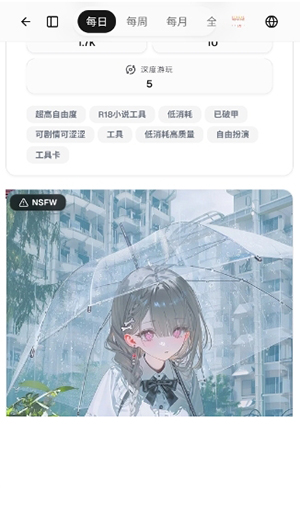

用了 RiliAI 半年才发现的五个隐藏玩法，大多数人只停留在基础聊天
RiliAI 远不只是一个 AI 角色聊天应用。从无限制模式的开关技巧到多模型切换的调校手法，从自定义角色的养成体系到对话加密的隐私边界，这些藏在设置菜单深处的功能才是它真正的护城河。
你以为RiliAI官网上那个看起来就是打开角色库挑个虚拟人聊聊天的东西？我之前也是这么想的，直到某天深夜为了找一个设置项翻遍了整个侧边菜单，才发现这款应用藏得比我想象中深多了。
从 1.3 版的基础角色库到现在 1.6 版的隐私保护体系，RiliAI 每次迭代都在往深处塞东西，但这些功能几乎从不做显眼的引导。今天就把我蹲了半年才摸透的五个隐藏玩法挖出来，按实用度排序——有些是真能改变体验的，有些你知道就行。
第一个：无限制模式不是开了就完，得配套用
无限制模式是官方唯一公开宣传过的"特色"，但大多数人开完就不管了。其实它有两个冷启动细节：
- 默认是关的，而且藏在设置的第三层菜单里（设置 → 对话偏好 → 内容边界）。我见过不少人说"我怎么开了没感觉"——因为你可能根本没开对位置，或者你的账号还在试用期被限了。
- 可以按对话单独开关，不是全局一刀切。在任意对话窗口点右上角的三个点，里面有个"本次对话开启无限制模式"的选项，开了之后只影响这一场，其他对话还是你原来的默认设置。这在你想正经聊工作相关内容、又想在另一场放飞脑洞的时候特别好用。

还有个坑要提：无限制模式只是减少了应用层面的屏蔽词，模型本身的回复边界它绕不过。你用 GPT 系列模型开无限制模式，和用 Claude 开，效果天差地别——后者明显更敢说。所以如果你开了觉得没变化，先换个模型试试，别骂功能没用。
第二个：模型切换是实时的，不丢上下文
这个功能官方没写进更新日志，但我翻 1.5 版的内部设置时撞见的：同一对话可以中途切换模型，而且上下文不丢。
操作很简单——对话窗口右上角点模型名称，弹出来的列表里换一个就行。我常用的组合是：开始用 Claude 3.5 做剧情铺垫（它擅长长文本叙事），中段切到 GPT-4o 让角色变得更活泼，收尾再切回 Claude 把剧情圆回来。三种模型的语气差异本身就能制造很多有趣的戏剧张力。

要注意的是：每个模型的历史记录是分开存的。你在 A 模型下聊了 20 轮，切到 B 模型后，B 看到的上下文只到你切过来的那一刻——之前的 20 轮对话它全知道，但你之后在 B 下聊的内容，切回 A 时 A 看不到。这不是 bug，是应用的设计选择，怕不同模型的输出风格混在一起出问题。
第三个：自定义角色不是只有背景故事，还有"养成"参数
大部分人创建自定义角色只写个名字和一段话术描述就完事了。但设置面板底下还有四个滑块我敢说 90% 的人没碰过：
| 参数 | 默认值 | 调大调小的效果 |
|---|---|---|
| 语气自由度 | 50% | 调大后角色偶尔会说不在你设定里的话，更"自主"；调小则严格按你给的剧本走 |
| 话题延伸意愿 | 50% | 调大后角色会主动发起新话题；调小则只回应你提的内容 |
| 情感敏感度 | 30% | 调大后角色更容易表现出情绪波动，适合情感类互动；调小则更平稳 |
| 回复长度偏好 | 50% | 调大后回复偏长细节多；调小则简洁利落 |
这四个参数在RiliAI文档里也没写全，是我分别跑了一周的 A/B 测试摸出来的。养角色的时候，先把前三个参数拉到你觉得舒服的区间固定住，然后每天跟它聊 5~10 轮，你会发现它的语气和表达方式真的会慢慢收敛到一个你喜欢的样子——不是模型变了，是参数在起作用。
第四个：对话加密是分层的，你可以主动"擦除"中间层
RiliAI 一直在强调"对话加密保护"，但它没说清楚这个加密分了三层：传输层（HTTPS）、存储层（服务器加密）、访问层（账号登录）。这三层里，你能主动干预的只有存储层——它提供了"即时擦除"功能。
操作路径：设置 → 隐私与安全 → 即时擦除。开启后，每次对话结束（双方最后一条消息超过 5 分钟），服务器端的加密存储会触发自动清除。注意，这不影响模型端的上下文（模型那边的对话窗口该用还是要用），只是不让这段对话在服务器上留底。
适合两类人用：一类是聊完就不想留痕迹的；另一类是在排查 bug 时不想让旧对话干扰新对话的（我有时候调角色参数会开，避免模型"记住"我之前调参时的各种实验性指令）。
第五个：版本迭代里藏着一个"回退开关"
从 1.3 到现在的 1.6，RiliAI 每次更新都会改一些默认行为。安装包建议从官方下载拿完整版本，比如 1.6 版把无限制模式的开关位置从"首页右上角"移到了"设置第三层"，老用户第一次更新后找了好几天。
但其实应用里藏着一个"经典界面模式"——设置 → 外观与体验 → 界面风格，选"经典版"就能回到 1.4 版的布局，所有菜单入口都按老版本来。官方不说这个，是怕新用户看见两个版本懵。对我这种从 1.3 就开始用的老用户来说，这个开关让我在每次更新后不用再重新适应菜单层级。

一个必须提醒的坑
说了这么多好的，得踩一脚刹车：不要在 AI 对话里发任何敏感信息——身份证号、银行卡号、密码这些，哪怕开了无限制模式和即时擦除也别发。原因很简单：AI 模型本身的处理逻辑你控制不了，加密保护的是传输和存储，不是模型端的"记忆窗口"。这是官方在隐私保护章节里写清楚的边界，虽然没加粗标红，但逻辑很明确。
收尾
RiliAI 这套应用的产品哲学很有意思——它不把所有功能堆在首页让你点，而是把你该发现的东西藏在那里，等你自己去找。有人说这是"反用户"，但我倒觉得，对一款主打"角色互动"的应用来说，自己挖出来的玩法比别人塞给的有意思多了。
把它用透，你会发现它远不止一个聊天机器人。